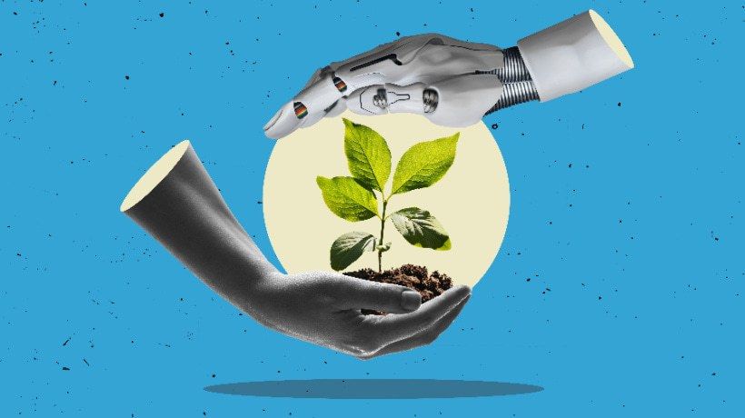

Conclusion

Generative AI is a powerful tool that has the potential to have revolutionary benefits but also has significant risks. When considering its use to further some of our UN sustainable development goals, the hugely positive side shines through. Our research into aiding UN goal 3 and UN goal 9 show how generative AI can help many fields, such as healthcare, industry and infrastructure. It can also help to achieve many more of our goals.
However, when considering the environmental impact that generative AI has, it raises an important question, is it worth it? AI servers are held in data centres which require large amounts of energy and resources such as electricity and water to run. We can see how negatively this affects our environment. Much of this energy is still generated from non-renewable sources, contributing to greenhouse gas emissions and climate change. This raises an ethical debate about whether the gains achieved through AI development are justified if they come at the expense of the planet's sustainability?
We have also looked at how generative AI is changing the way people work and learn, and not always for the better. In schools and workplaces, it’s starting to replace genuine effort and original thinking. Instead of utilising AI as a tool to support creativity, many are relying on it to think for them. This overreliance can lead to reduced motivation and make work feel less authentic.
Our research shows that generative AI offers both opportunities and challenges. It highlights the importance of using technology responsibly to maintain creativity, reliability, and sustainability. Progress should be balanced with caution - ensuring AI supports human development without replacing it or causing harm. Finding this balance will be essential as AI continues to evolve and shape the future.